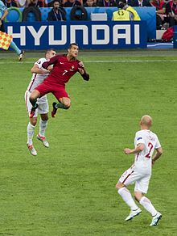
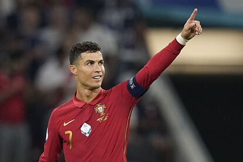

Selección nacional
Categorías inferiores y primeros torneos internacionales (2001-2007)
Ronaldo empezó su carrera a nivel selecciones con la sub-15 de Portugal en 2001. Durante su trayectoria con las divisiones menores, Ronaldo representó a las selecciones sub-15, sub-20, sub-21 y sub-23, sumando 38 partidos internacionales y 18 goles anotados. Fue campeón del Torneo Esperanzas de Tolón 2003 con la sub-21.
Con 18 años, Ronaldo apareció por primera vez con la división mayor de Portugal, en una victoria 1 a 0 sobre Kazajistán el 20 de agosto del 2003, saliendo como un substituto de Luís Figo en el entretiempo. Eventualmente, fue convocado para la Eurocopa 2004, celebrada en su país natal, y anotó su primer gol en un torneo internacional de selecciones en una derrota 2 a 1 ante Grecia, los eventuales campeones, por fase de grupos. Después de anotar su oportunidad en la tanda de penales ante Inglaterra por cuartos de final, Cristiano ayudó al equipo a alcanzar la final al anotar el primer gol en la victoria 2 a 1 contra los Países Bajos. Fue incluido en el Equipo del Campeonato, habiendo hecho dos asistencias en adición a sus dos goles en el torneo.
Cristiano fue el segundo máximo goleador de Portugal en su grupo de clasificación para el Mundial de Alemania 2006, con siete goles anotados. Durante el campeonato, anotó su primer gol mundialista contra Irán de penal, en el segundo partido de fases de grupos de Portugal. Con 21 años y 132 días, Ronaldo se convirtió en el jugador más joven de la historia de la selección lusa en anotar en un Mundial. En el famoso partido de octavos de final contra Holanda, conocida como la Batalla de Núremberg, Ronaldo fue forzado a abandonar el campo lesionado tras una entrada del defensor holandés Khalid Boulahrouz. Luego de la victoria 1 a 0 de Portugal, Cristiano acusó a Boulahrouz de querer lesionarlo intencionalmente, pero aun así acabó recuperándose a tiempo para el siguiente partido. En los cuartos de final ante Inglaterra, Wayne Rooney, el compañero de Cristiano en el Manchester United en ese entonces, fue expulsado tras infraccionar al defensor portugués Ricardo Caravalho. A pesar de que el árbitro aclaró después de que la tarjeta roja se debió únicamente a la infracción de Rooney, los tabloides británicos especularon que Ronaldo tuvo influencia en su decisión al haberse quejado agresivamente, después de que haya sido visto en las repeticiones guiñándole al banco de Portugal tras la expulsión de Rooney. Después de esto, Ronaldo anotó el penal de decisivo de la tanda que envió a Portugal a las semifinales del torneo. Sin embargo, en la semifinal ante Francia, un solitario gol de Zinedine Zidane impidió que Ronaldo llegase a su segunda final consecutiva con su selección, en un partido donde también fue abucheado por fanáticos. Debido a su conducta en el torneo, la FIFA acabó dándole el premio al Mejor Jugador Joven del Mundial a Lucas Podolski de Alemania. Luego de la Copa, Ronaldo continuó representado a Portugal en los partidos de clasificación para la Eurocopa 2008, anotando dos goles en el proceso.
Asumiendo la capitanía y años difíciles (2007-2012)
Un día después de su cumpleaños número 22, Ronaldo fue capitán de Portugal por primera vez en un amistoso contra Brasil el 6 de febrero de 2007, en honor a la petición del presidente de la Federación Portuguesa de Fútbol, Carlos Silva, que había muerto dos días antes. Con la Eurocopa 2008 por delante, Cristiano heredó el dorsal 7 de Luís Figo. A pesar de haber anotado 8 goles en las eliminatorias, la segunda marca más alta, solo pudo marcar un gol en el torneo, el segundo de los tres goles de Portugal en su segundo partido contra República Checa, en el que los portugueses ganaron 3 a 1. Finalmente fueron eliminados en cuartos de final por Alemania, no pudiendo repetir el éxito de la edición anterior.
Después del fracaso de Portugal en la Eurocopa, la Federación despidió a Luis Felipe Scolari y contrató a Carlos Queiroz como nuevo entrenador, ex-asistente de Ferguson en el Manchester United. Queiroz hizo a Cristiano el capitán permanente del equipo en julio de 2008. Cristiano falló en marcar un solo gol durante todas las Eliminatorias al Mundial de Sudáfrica 2010, así como Portugal evitó quedar afuera del torneo al ganar un repechaje ante Bosnia. En la fase de grupos del Mundial, Cristiano fue nombrado hombre del partido en los tres partidos, ante Costa de Marfil, Corea del Norte, al que anotó su único gol del torneo, y Brasil. Portugal acabó quedando eliminado por España, los eventuales campeones del torneo, por solo 1 a 0.
Ronaldo marcó sietes goles en las Eliminatorias a la Eurocopa de 2012, incluidos dos dobletes en el repechaje ante Bosnia, que enviaron a Portugal al torneo, donde quedaron alineados en el "grupo de la muerte", junto a la Alemania de la «Generación Löw», la Holanda subcampeona del mundo en el pasado Mundial de Sudáfrica, y el peligroso elenco de Dinamarca. En el último partido de la fase de grupos, ante Holanda, Cristiano aseguró la victoria marcando un doblete para el 2 a 1 final, y ante la República Checa por cuartos de final, anotó un cabezazo para ganar por 1 a 0, siendo elegido en ambos partidos, el Jugador Más Valioso. Después de que las semifinales ante España quedaran empatadas sin goles, con Ronaldo enviando tres tiros al travesaño, Portugal fue eliminado por la tanda de penales. Cristiano se quedó sin lanzar ningún penal, ya que estaba elegido para patear el quinto penal no utilizado, decisión que fue cuestionada por los medios. El propio compañero de equipo de Ronaldo, Nani, dijo que Cristiano "exigió" ejecutar el último penal. Como máximo goleador conjunto con tres goles, junto con otros cinco jugadores, fue incluido nuevamente en el equipo del torneo.

Máximo goleador histórico de Portugal y campeón de Europa (2012-2016)
Durante las Eliminatorias para el Mundial 2014, Cristiano anotó un total de ocho goles. Un partido clasificatorio del 17 de octubre de 2012, un empate 1 a 1 contra Irlanda del Norte, marcó su 100° aparición con la selección. Su primer hat-trick internacional también llegó ante Irlanda del Norte, cuando marcó tres veces en 15 minutos en una victoria 4 a 2 el 6 de septiembre de 2013. Después de que Portugal fracasara en clasificarse durante las eliminatorias regulares, Cristiano marcó todos los cuatro goles del equipo en el repechaje ante Suecia, que también fue un choque entre Cristiano y Zlatan Ibrahimović, que aseguró su pasaje a la competencia. Su hat-trick en la vuelta llevó su marca internacional de goles a 47, igualando el récord de Pauleta. Eventualmente, Cristiano anotaría un doblete ante Camerún el 5 de marzo de 2014 que lo convertiría en el máximo goleador histórico de su país. Ronaldo formó parte de la delegación portuguesa para el Mundial, a pesar de arrastrar una tendinitis rotuliana y una lesión de muslo, potencialmente arriesgando su carrera. Ronaldo más tarde comentaría: "Si tuviéramos dos o tres Cristiano Ronaldos en el equipo, me sentiría más cómodo. Pero no tenemos." A pesar de las dudas sobre sus condición, siendo forzado de abandonar la práctica dos veces, Ronaldo jugó los 90 minutos del primer partido contra Alemania, aunque no fue capaz de prevenir la goleada 4 a 0. Después de dar una asistencia en los últimos minutos en el empate 2 a 2 ante Estados Unidos, anotó el gol agónico de la victoria ante Ghana por 2 a 1. Su 50° gol internacional lo convirtió en el primer portugués en jugar y anotar en tres Mundiales. Portugal fue eliminado prontamente en fase de grupos por diferencia de gol.
Después de perderse el primer partido de la Clasificación para la Eurocopa 2016 contra Albania por lesión, Ronaldo anotó un gol en tiempo de descuento en el minuto 95 para que Portugal ganase por 1 a 0 contra Dinamarca. El 14 de noviembre de 2014, jugó contra Armenia también por la clasificación para la Eurocopa, donde anotó el único tanto del partido que le dio la victoria a su selección. Al comienzo del torneo, Ronaldo falló en convertir en los empates del equipo ante Islandia y Austria, a pesar de haber rematado 20 veces al arco, y en este último, se convirtió en el jugador con más apariciones en Portugal, sobrepasando a Figo, con 128. Con un doblete marcado en el empate 3 a 3 ante Hungría, Ronaldo se convirtió en el primer jugador en convertir en cuatro torneos Europeos, haciendo además 17 apariciones, un récord. A pesar de quedar tercero en su grupo, detrás de Hungría e Islandia, el equipo pasó a la siguiente ronda debido al nuevo formato del torneo, aún sin haber ganado ninguno de sus tres partidos.
En el primer partido eliminatorio de Portugal, la única oportunidad de gol de Ronaldo fue salvada por el arquero de Croacia, Danijel Subašić, pero el rebote fue aprovechado por Ricardo Quaresma, que anotó el gol definitorio en tiempo extra. Después de que el equipo elimine a Polonia por penales, con Ronaldo anotando el primer penal, se convirtió en el primer jugador en participar en tres semifinales de Eurocopa; anotó el primer gol del 2 a 0 ante Gales, igualando el récord de Michel Platini como el máximo goleador histórico del torneo con nueve tantos. En la final ante la local Francia, Ronaldo tuvo que salir del campo luego de una falta de Dimitri Payet, y a pesar de múltiples tratamientos e intentos de seguir, fue sustituido por Quaresma a los 25 minutos de partido. Durante el tiempo extra, Éder anotó el gol de la victoria al minuto 109. Como capitán del equipo, Cristiano alzó el trofeo en celebración al primer título oficial de su país,48 y, además, se proclamó Bota de Plata del torneo al anotar tres goles y dar tres asistencias.

Post-campeonato de Europa y Mundial (2016-2018)
En el partido apertura de Portugal de la Copa Confederaciones 2017 contra México el 17 de junio, Cristiano armó el gol inicial de Quaresma para el empate 2 a 2 final. Tres días después, anotó el único gol de la victoria ante la local Rusia. El 24 de junio, anotó el gol de penal de la victoria 4 a 0 ante Nueva Zelanda, que permitió a Portugal avanzar de grupo y avanzar a las semifinales del torneo; con su gol 75° a nivel internacional, Ronaldo también igualó a Sándor Kocsis como el segundo máximo goleador histórico europeo, solo detrás de Ferenc Puskás.Fue nombrado como Hombre del Partido en los tres partidos de fases de grupos de Portugal. Ronaldo dejó la competencia antes; después de la derrota del equipo ante Chile por 3 a 0, tuvo permiso para volver a casa antes y presenciar el nacimiento de su nuevo hijo, y por lo tanto, no estuvo presente en el partido por tercer puesto que Portugal le ganó a México por 2 a 1 en tiempo extra.
El 31 de agosto de 2017, Ronaldo anotó un hat-trick en la victoria por 5-1 sobre las Islas Feroe en un partido de clasificación para el Mundial de Rusia 2018, que lo vio superar a Pelé e igualar a Hussein Saeed como el quinto máximo goleador en el fútbol internacional con 78 goles.338 Estos goles elevaron su cuenta en las eliminatorias de la Copa del Mundo a 14, igualando el récord de Predrag Mijatović de más goles en una sola campaña de clasificación de la UEFA, y también lo vio romper el récord de más goles marcados en un grupo de clasificación europea, superando el récord anterior de 13 goles marcados por David Healy y Robert Lewandowski. El hat-trick de Ronaldo elevó su total de goles en la fase de clasificación para la Copa del Mundo a 29, lo que lo convirtió en el máximo goleador en las eliminatorias de la UEFA, por delante de Andriy Shevchenko, y en el máximo goleador en los partidos de clasificación y finales de la Copa del Mundo combinados con 32 goles, por delante de Miroslav Klose. Posteriormente, Ronaldo se sumó a esta cuenta al anotar un gol contra Andorra en la victoria por 2-0.
El 15 de junio de 2018, Ronaldo se convirtió en el jugador de mayor edad en marcar un 'hat-trick' en un partido del Mundial, lo que ayudó a Portugal a asegurar un empate 3-3 contra España (su tercer gol fue un tiro libre de 30 yardas) en su partido inaugural. Al hacerlo, se convirtió en el primer jugador portugués en marcar un gol en cuatro Mundiales y uno de los cuatro jugadores de cualquier nacionalidad en hacerlo. El 20 de junio, Ronaldo anotó el único gol en la victoria por 1-0 contra Marruecos, rompiendo el récord de Puskás como el máximo goleador europeo de todos los tiempos, con 85 goles internacionales. En el último partido del grupo contra Irán el 25 de junio, Ronaldo falló un penal en un eventual empate 1-1 que vio a Portugal avanzar a la segunda ronda como segundo de grupo detrás de España.El 30 de junio, Portugal fue eliminado tras una derrota por 2-1 ante Uruguay en los octavos de final. Por sus actuaciones en el torneo, Ronaldo fue incluido en el Equipo Estelar de la Copa del Mundo.

Nations League y 100 goles internacionales (2018-2020)
Después de la Copa del Mundo, Ronaldo se perdió seis partidos internacionales, incluida toda la fase de liga de la UEFA Nations League 2018-19, pero jugó para Portugal en el Final Four de la Liga de las Naciones en junio de 2019, donde eran locales. En las semifinales del 5 de junio, marcó un hat-trick contra Suiza para llegar a la final. Al anotar el primer gol, se convirtió en el primer jugador en anotar en 10 competiciones internacionales consecutivas, rompiendo el récord que previamente compartió con Asamoah Gyan de Ghana.En la final del torneo cuatro días después, Portugal derrotó a Holanda 1-0 y se consagró campeón del segundo título de toda su historia.
El 10 de septiembre de 2019, Ronaldo anotó cuatro goles en la victoria a domicilio por 5-1 sobre Lituania en un partido de clasificación para la Euro copa 2020;en el proceso, superó a Robbie Keane (23 goles) como el jugador con más goles en la fase de clasificación para la Eurocopa, estableciendo un nuevo récord con 25 goles. También estableció un nuevo récord de goles contra la mayoría de los equipos nacionales, 40,al tiempo que completaba su octavo hat-trick internacional.El 14 de octubre, marcó su gol número 700 en su carrera con el club y el país desde el punto de penalti, en su 974a aparición en su carrera, una derrota por 2-1 ante Ucrania en un partido de clasificación para la Eurocopa 2020. El 17 de noviembre, Ronaldo anotó su gol número 99 en la victoria por 2-0 sobre Luxemburgo, lo que llevó a Portugal a clasificarse para la Eurocopa 2020.El 8 de septiembre de 2020, Ronaldo anotó sus goles internacionales número 100 y 101 en una victoria a domicilio por 2-0 sobre Suecia en un partido de la UEFA Nations League 2020-21, convirtiéndose en el segundo jugador masculino en lograr este hito (después de Ali Daei de Irán) y el primero en Europa.
Máximo goleador de la historia de Selecciones y presente (2021-act.)
El 15 de junio de 2021, Ronaldo anotó dos goles en el primer partido de Portugal de la Euro Copa 2020, una victoria por 3-0 contra Hungría en Budapest. Esto le llevó a un total de once goles en la Eurocopa, dos por encima de Michel Platini, como máximo goleador de todos los tiempos en la historia de la competición.También se convirtió en el primer jugador en anotar en cinco Campeonatos de Europa y en once torneos consecutivos. El doblete convirtió a Ronaldo en el jugador de mayor edad en marcar dos goles en un partido de la Eurocopa, y en el jugador de mayor edad en marcar para Portugal en un torneo importante. El 23 de junio, marcó dos penales en el empate 2-2 de Portugal con Francia en su último partido de la fase de grupos, igualando el récord de Daei de 109 goles internacionales.El 27 de junio, Portugal fue eliminado tras perder 1-0 contra Bélgica en los octavos de final.Ronaldo terminó el torneo con cinco goles (empatado con el checo Patrik Schick) y una asistencia, lo que le valió la Bota de Oro. El 1 de septiembre, Ronaldo anotó dos goles de cabeza, y el segundo se produjo segundos antes del pitido del tiempo completo, en la victoria por 2-1 en casa contra la Repúblicade Irlanda en el Algarve Stadium, que lo vio pasar el récord de Daei de 109 para convertirse en el único poseedor del récord.
.jpg)